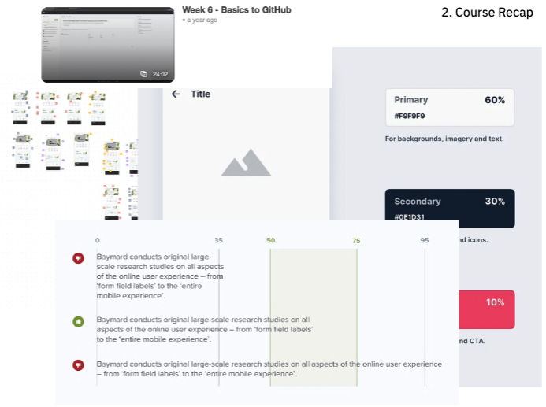

The End Of IXXN221
Week 12
This final lecture provided an impactful recap of our 12-week journey while preparing us for real-world applications through the redesign activity. Reviewing assignments and topics helped solidify the knowledge gained in this course. Clarifying reflective analysis and visual presentation requirements. Moving forward, I will complete my assignment, emphasizing visual storytelling and connections to course concepts. This activity showed how good design requires teamwork, communication, and applied skills. The course has equipped me with theoretical foundations and practical abilities to succeed in UX design.
